<html><head><title>Pharmacology</title><style>body{font-family:sans-serif;padding:20px;background:#f4f4f9}.chapter{background:white;padding:20px;margin-bottom:30px}.q{border-bottom:1px solid #ddd;padding:15px}.correct{background:#d4edda}</style></head><body><h1>Pharmacology</h1><div class='chapter'><h2>Anticoagulants</h2><div class='q'><p><b>Q32:</b>   ‹è- -                   .  Œ     ,                .                      .               ? 767 </p><div class=''>a) </div><div class=''>b)  †</div><div class='correct'>c) ê    </div><div class=''>d) </div><p><i>                 -          ...</i></p></div><div class='q'><p><b>Q33:</b>   •Ž- -           ç        .              .      ™‡      .                        ? </p><div class=''>a)  </div><div class=''>b)   ‘  </div><div class='correct'>c)     </div><div class=''>d) ç “–</div><p><i>          -                   ...</i></p></div><div class='q'><p><b>Q34:</b>                           ? </p><div class=''>a) ™   </div><div class=''>b)   </div><div class=''>c) †   </div><div class='correct'>d) …  </div><p><i> …                     .       ...</i></p></div><div class='q'><p><b>Q35:</b>           ,          ™‡             ? </p><div class=''>a) –.è – –.‹</div><div class='correct'>b) •.è – ˜.è</div><div class=''>c) •.‹ – ˜.‹</div><div class=''>d) ˜.‹ – Œ.‹</div><p><i>  ™‡                             •...</i></p></div><div class='q'><p><b>Q36:</b>              ? 768 Answer Key Question No. Correct Option 769 Detailed Explanations </p><div class=''>a)  </div><div class='correct'>b)  „  </div><div class=''>c) š       </div><div class=''>d)         </div><p><i> ,       (™š),    „             ç ê ...</i></p></div></div><div class='chapter'><h2>Respiratory System</h2><div class='q'><p><b>Q31:</b>                     .                   ?         ‚     ˆ    - ,    _______ Answer Key Question No. Correct Option 791 Detailed Explanations </p><br><div class=''>a)          ‚  </div><div class=''>b) Ž             </div><div class='correct'>c)           </div><div class=''>d) Ž         </div><p><i>                 .           ...</i></p></div></div><div class='chapter'><h2>Interleukins, Growth Factors and Targeted Thera...</h2><div class='q'><p><b>Q1:</b>                    .            ,       .               ?      ,  ,     :        :         -    -      :         -            ?            -         ?                 ?                    ?              -               -  .            ?   --                               .     ?      -   ?              -              ?             :                 -    .     .   --                      .         ?               ?   --                       .    ,                     .     ,           Å‚               . ƒ                ?            ?                        ?        -          ?                     ?               -   ?              - ?                   ?   -                    .                        ?                 ?                ?                        -     ?   --            ,          .                 .                ?                     .                        .              ?                 ?                ?                .                      ?                      ?                  ?                   ?            -      ?             ?   --             .            .           ?                  ?   --               -   .              -     ?            ?           ,             ,        ,         ?   --         ,  ,  ,    .               .          Å ‚ ƒ„. …           ?                         .                   ?   /           .                    ?          ?                ?               ?      -        ?               ?                 ?                        ()    .               ?           ?              -     ?                       .        - ,               .         -            ?                 ?                           .               ?                           .                                     ?               .                 ?           - β-                     ?              :   --                          .               ?            ,       .        Å   Å  Å   ‚ ?                               ?                   ?            ? </p><br><br><br>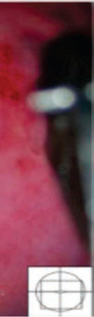<br>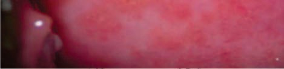<br><br><br><br><br><div class=''>a)         </div><div class=''>b)          </div><div class='correct'>c)          -</div><div class=''>d) -           </div><p><i>                    . ‹                 ...</i></p></div><div class='q'><p><b>Q2:</b>  Å                              ?             - -   ?                                     ? c)                           .                / . Å ‚      ƒ            ?         ,                        .            -                  .     ?                     .                     ?                &;              ?                  ?         -            ?              ?     +/ +         . Å      ‚      ?                          .                 ?                    ?                         :                    .                        .        Å         ?      /       Å        Å ‚   Å. ƒ ‚         ‚     ‚      ?                       .          . ƒ                    ?                     .                .  Å ‚   ƒ     „  -       .       ‚    „     ‚  „   ?                 ?                  .                                ?   - -                              Å‚ . ƒ                 „      -           . …           †   .                ?   - -        '         .               ?              ?                 .                     ?                 ?                    ?     -                           ?                             ' ?                                       .        ?                 ?              ?                  ?              :            :              -       ?           .        -               ?               ?                      :             ?               ?   --         -Å‚ ƒ   „…,         ,  ,        †  . ‡   ,              …. ˆ „    ʼnˆ Š     Å‹  Å Š .   -„    …      Š ?                  ?              . …                 ?                 ?        ,     ___________.                 ?               ?             +      ?   --                 .        / .                    ?   --                     .               ?            ____________             ?          Å          Å   . ‚    ƒ        Å    „. …          Å    Å       ?                  ?   -             ‚                 .         ? 724                        ?   -  -        . ‚            ƒ                  . „                  ?   - -             .                           ?               ?                - β-             ?       -  ,    -                    ?             ‚     ?  …  Å  Å    -  „ Å   ?                 ,                    .             ?                     .               ?           -         ? </p><div class=''>a)   </div><div class=''>b) Å </div><div class='correct'>c) ‚  </div><div class=''>d)   </div><p><i> Å                 .        ,             ...</i></p></div><div class='q'><p><b>Q3:</b>      = ƒ  ,             ?          Å       ‚+  ?  ‚  ƒ                     .               „    …  ?       ‚       .   ‚       . Å ‚     ‚  ƒ    ƒ                  ‚ „ -   ?          Å?                    Å ?  112       ,            ?                    ?  Å          ______.     ƒ                „     .            ?        Å        Å    Å ?            .         .    ,                  .              .  Å               ? 202  „                      Å+    ?                       „‚…   - . †                                  .           ?                ?   ‰--           -             . Š                   . ƒ                  ? 252          ?        ‚                 ?   ‚              ƒ-   .               --          ‚.             ‚ „?             -    ,    ,        .              Å .        ?               -   .              ?         ,  - -    Å    .                ?             -‚   ?                 .             ‚   ?                 ?              ?                 .                 ?                      '               .          ?               -   ?                -              . Å        ‚  .          ƒ     „ ƒ     -   ?                 ?      ‚        ƒ,                  .                ?  Å                       . ‚                      ?                     - -     .                ?                    ?           -             .           ?   --                 . '               .           ? 515  523      ,  ,       .           -   .              .   -        ?                ?                     -       .                   ‚     ? 560         -„   „ Œ  ?             '     ? 582  …              Å ‚-ˆ?               ƒ:  Å- -                     . ‚            ?             '       Å       . ‚        ƒ   ?  Å        ,              ‚     . ƒ ,     . „      ….  /   .                    ?          Å Å    ‚     Å .                ?     „         …       .            ?    -                          .                      ?   --               .            ?   ‚ƒ- -     „…                      †            ‡   .          '          ?                  Å   ?  ‚ - -         ƒ„    …    . †       -   .         ?                          -  .                 .               ?                       .         -            .           ?                   ,           ?   - -                     . …                        . †                          ?                       .                    ?                      ?            Å           ‚              . ‚     .                       . Å             ,                     .               ?  …  Å  Å       ?                ?   „…-† -        Å ‚/     . ‡                   ?            .                   .     -ƒ                      .       ? </p><br>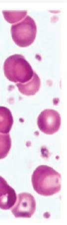<br><br><div class='correct'>a)  </div><div class=''>b)   „</div><div class=''>c) Å </div><div class=''>d) …</div><p><i>     = ƒ  ,          „…%    „…% -  . ƒ       ...</i></p></div><div class='q'><p><b>Q4:</b>            ,                 ? 6                 Å? 24  Å        ‡           ? 51  67             , ‚           . Å ‚     ‚          ‚   -   ?                       ? 77                      ? 92             ,         .                  .             ?  …                  . †            †         .                 ? 130                          ? 144   --     ƒ   ‡                 .                    ? 158      Å       ˆ     „? 171  186         Å              .                          ?   ƒ„- -             . Å                  ?  ‰        -    ? 216  234     ƒ    ()?                  ‡: 243  …                      ?                ? 259         … ‚   ƒ   -   ƒ          .      ‚       „          ? 269  ‰          Š       ƒ    .            ? 287  304  ƒ-  -        „…                  †.                 ‡ˆ †.    †            .                 ?  319                .                 ?   …†- -              . ƒ Å  ,         . „                '                     .      329      ?                     ? 341  359        ‚       -         .                ?   -                 .           ? 372                .                      ? 388                    „  ? 397  404      ‚                  ' ?  412                 ƒ            .          „?   † - -          .  ƒ              .  „   .                 ? 419                   ? 432               Å  . ƒ    ƒ   ƒ      .                    ƒ          ? 447  ‚                      -„Å                  ? 462                ? 472                    ? 488       -      ,  -               ? 502              ?         Å          :                 . Å                     .           ? 542            ƒ„            .    ……      , „……     ( ), †…     ( )  …      ( ‡).                 ?  575  ƒŽ--          -     Å‚. ‡  …   ÅÅ                . è     êÅ  Š  ‘‘,    „  .       -„     „     Š ?  „                ƒ ?                     ? 589   -        ,     ,    ,     ,              .    . 601                            _______. 610    †           ? 620                ? 634  „…-Å-          .    †    Å …      . ‡    ,      † †     .          ‚     ? 645     -              …      ˆ . ‰              Š      .  659           ?                    ? 672   ‚--                  ƒ   ƒ   .                  ? 688                 ? 695      Šˆ‡  Å  Ń Å      .       Å         ? 702  ‚           ‹Œ    .        ‰      …     ç ç   …     . †     ç          .                 ? 713                              ?  „                  ƒ .               ? 731  „              ? 739  750                 ?            ,                ? 759                ? 783  805                  „    . †   ?  820                            .               ?  …  Å  Å   - Å           ‰     ? 837              ? 855   „…-† -                   ˆ . ‡              ? 871                             .              ? 886 </p><br><br><br><div class=''>a)     -    </div><div class=''>b)    …</div><div class='correct'>c)         </div><div class=''>d) † … ‡Å  </div><p><i>           ,            . Å            ...</i></p></div><div class='q'><p><b>Q5:</b>               (‹ )    ?            ?                †  ?  †    -     ‡              ƒ          . ˆ/.                         ?                       ?  ƒ           „.…  ‚       .         ?  … ŠÅ--                   ‹              . †                  .        -        ?  ‚ …†-          -                        .             ?  …   ,                 ?            „    .    „      ,   Š         „   . ‹  „   .  ƒ                        ?                          :                     . Œ  ,                     . ç      . „            ?                Å       ,       Å    ?  „                ?   --                           , ,    .       . ˆ             ç è/         ‰  / . ƒ                    ?             †        -   .              ?        ‚    ‚             „„ „   ‚       ?   ‡-  -         „-         ‹ˆ     . Å    .                    Å                    . ‹    .            ,     ,                  .  Œ ,       Œ    .    Œ            ?       -             '       /    .                ?                         . Å ƒ    ƒ   , ,    . Œ             ‚…     率/ç燌 .                   ?  ‚     ‚     ?  Å--    ‚ƒ„       . …      †. /   ‡  ˆ‰.               ?       ,            ,                     .                 ?                                               ?                      ' ?         ‡ˆ            ?  ˆ          ƒ       ?                            -   ?           ƒ    ƒ               ƒ  .            ‚    ?  ‚                    -          ‡  ?                            . ‡    ,            .                      ?               ?          -            ?               ? 516   „--             .             .                          ? 524                   . …          ,       ,     .       †       ?  Š                   -      .      -                 ? 561             ?  „          Š           .              ?                 ‹   -     . …                 ?   …Å- -         ˆ ‹                  . Œ                    „ç† µ/‰.         -  ‹…  . ‚                 ?  ‡ˆ- -                          .                    ‰Š         .                   ?  ‚        ?   …--                  . ‡            ?               ?               - ?  …                             ?               ?   ‚‚-           ‰„‚‚         .                        -     .     ?   ‹Œ-- Å     Å   ç          Å      Å   Å . ‡    Å Å    ƒ     .     Å    ƒ     Ž    ?  ‚           …    ,    ‰     ‰ .    ‰      ç           ‰     ç .          …    ?       ? 725  „                     . †  ,     -    .                .                   ?  „                 ?                     ,                   ?         Å‚            .      ,                  Å .               ?                      ‚.           ?                       ˆ  -   . †            ?                     ˆÅ          ?  †   Å  Å         ‰  ?  …         -                     ?        Å ‚/          ‹   †    ˆ . ‡               -  †    ?                ? </p><br><br><br>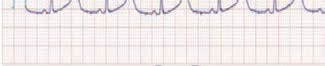<br>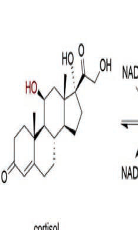<br>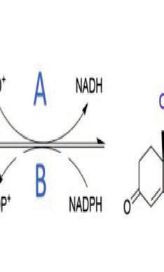<br><br><br><br><div class=''>a) ˆ  ‰ </div><div class=''>b) Š, ˆ  ‰</div><div class=''>c) Š  ‹ </div><div class='correct'>d) Š, Œ  ‹</div><p><i> ‹          (‹ )                         . ...</i></p></div><div class='q'><p><b>Q6:</b>  ‹                .              çŽ/,                  ?                 ______                             ?  †          ‚     ƒ   ‚  ˆ/           ..  …                        ƒ†‡.                          ?            ?            †               .  ‡  ,      ˆ…„    ,         . ‰             .       ‡                 ? 113  Œ                 .                 ?  ‚                             . ‰   ,     Š   .                  ?   Š--     „         . ˆ     ƒ     ‹             .               ?              Å ‚     „?                   -.         ?   ‰‡- -                      . ‹         ,            . Å               ?  „                  ?             Å                Å      .                ?  Š-Å-  Å ‚            Å.          Å ‡      ?  …           Š‚„  ______                        ?    ‚   -      ƒ       Å         .             ?                             . Ž   ,      ‚           „    …  .     ‚ ?                     Ž      ?                   Œ ?                ,      ,     .            ?          …    . Œ         .                 ?                       . Å                     ?           -                Š    .                 ?                 µ ?   ‡…--          Š‹        ,   ,    ,    . ‚       Š‚          ˆ   . Š  Œ ,                      .                     ?   †‡--                -              . ƒˆ   ‚‰                  …Š‹   .                  ?           ?  ‰               ?                 ‚                     ?  ‰       ƒ            ?  Å ‡                        .            :                  ?  „                .         ?                  ?         ,        . Å      ƒ    „…,  /†. ‡              .                  ?                            ?                       .  †                 ? 543   ‹- -      Å      . ‰                              . Œ             .         ?   ‹’--         „ .        „      „   ? 576                     ?  …                  ?             ?            -              ç              .                     ?          Žèê-‡‘     -    . ‚         ƒ? 621                ?              Å … ?  †              . 660                                     .             ?   ‡ˆ--              ‰…                  …-   . Š    .           ‰Œƒ        ?                ?  ‚    Ž ç      .             ç    Å?  ‹    …‰†                     .                   ?  „                        .                 .  ˆ        .          ?  „                 ç † ……/ ………  ?                   ?  ƒ-                  „       .          „   .  „--    …    . †            -          .            ? 784   ‰Š- -                  -      ‹‡‚ .     ,     Œ-      ?                 ‰     ÅŠ   ?  †   Å  Å            ‰   ?          .                               ?        -            ˆ   †.                ,   _______.             -      ? </p><br><div class=''>a)   </div><div class=''>b)   </div><div class='correct'>c)   </div><div class=''>d) Å </div><p><i>        ,             çŽ/ (•‰… Ž             ˆ...</i></p></div><div class='q'><p><b>Q7:</b>                                 .   ?              ?  ‚                    ƒ     ‹                      . Š              ?  ‰         ‡   ‚   -   .                   /ˆ     /ˆ,       . Š       ‡? 68                        ?                   .             ?                    ‡?              Å      ?  ‚                 .                 ?   Œç--           .   ‹   ‹        .     ,                 .                  ? 159   è…ê           ‚     „.     Å Å  „          è…ê?                   .             -     ? 187  203            :             . Œ          ‹                . „               ?                      ?           Å        ‚ .          ‚     ?                         . ƒ                ? 253                      ?  çŠ- -        ,  ,             Å-Å          . ê  ‚    „ Å , ‚    ,  ,   „    .       ‚              ?              ƒ   „:                     ? 305                      ? 320             ' ,                           .     . 330                     ?     ‚,                   .  ,   ‚    ç    .          ? 360             ?   Å‚--                   . ƒ   ,      ,   ,    -   .         ?   ‰ç--                     .                      ? 398  ç     -       Ž--       -       .                  ? 405           ______                      ?  „-                 ?     -Š                        .      ƒ                          ? 448  ‚                       ‡ ?        ,                           .                ?                         -     .               ?                               .                 ?            ?   ‰--       ƒ…         -Å  .                 . ‚  Å              .              ? 525   ‡‚ˆ-              .  ‰Š    ‹Œ  Å…    ‚ -                .                ?   …--            çŽ   - . ‰                   ,       .            ?   ˆ“-Š         ’/‹ Œ      . Š   „.           ?  ‚                 ? 583                    .                . …         ?  è                      ?  ‡Š- -                         . ‹     ,      ,     ,          . ‚                         ? 611  ‰               ?   Š--     ‚ †         . ƒ      ‚            ?  Š‹-Å-     † Å     Å   Å … Œ     Å. ç  Ž  èê/ /‰.‘’ ….                      Å?   --                 …       . ç   ,   ,      .        Ž / ‹.                 ?   ‰Š--       -             „…             .            ?   çˆ--                    . Œ    ,                     -  . Š           „  ƒ           ?        /         ()           ?   -- Å  ŠŃ Å ƒ Å  Å     .       Å    ÅÅ    Å?            ?   -                      Œç             .           ‡Å-             ?                  -        ? 732          è.ê/‘        ƒ                †‰ ……/………    ?  ‰               ,            -                ?      -  -            ?        ‚         . ‰                   ?  †           ‹‡‚-  ? 806            ‰  ?  ‘-  -            „  „        ‰. ‚  ˆŽ ‚ Å  „   „  . …       Å   „   ?                 ?  ‡              †     †   ƒ ?      „ -           .               ? </p><br><div class=''>a) Å     ç‚Žè  ê‚ ˆ     </div><div class=''>b) Å     ‡‚  ê‚ ˆ     </div><div class=''>c) Å     ç‚Žè  ‡‚     </div><div class='correct'>d) Å     ‚Žè  ê‚ ˆ     </div><p><i> ‹             .                      ...</i></p></div><div class='q'><p><b>Q8:</b>                -    ? 7                    ? 25                        ç           Ž-çˆ    ,      ‹     .           ‹          ? 52  ‰    ‚          , ‚       .             /ˆ.     ƒ      .… ˆ/ . Š ‚ ƒ                ?   ŒŽ- -         è   '            . ê                               ? 78  Å         ,                   -      .                ? 93  ƒ                         . Å       ‡            ‡  .                     ‡?                        ? 131  145              -              -  ?    -                 . ‰ Ž ,                 . ˆ                   .     „    ?  172   Å         „ Å ‚ ‚    „ ‚         -„ Å   ‚  Š .   ‚  ‚  „ .  Å               ?                    ?  Å              ?  217                        :  235                     .            ?         Å   ,  Å   ,    -        . ˆ    Å      Å  .         ‚ ? 244   --                      Š‚„. ƒ                   ?   ˆˆ--                        .               ? 260  270       ‚       „   „ƒ  ?                 „    ? 288    Å             .           „…       ,     †              .        ?                             ?         -                ?                    ˆ--          ? 342                -   ‚  ?                  ? 373  389                        .                  ?          -                             ?  è … (è…)                    .                  ?  413 ‹                .             ?   ‚Œ- -     çŽ   ,         . ‡          .                ? 420  ƒ             ‡‡ / ….      ˆ                    ? 433             ƒ         .            ‚         ƒ?  ‚               ? 463                      ? 473           ƒ       ? 489              ? 503                                              . Å       .                  .           . ‚         .                     ? 526  ‚                   :   èè--  ,   -   ,                 ê  . ç      ,                        .      ‚        ?        Å       ‹”/µ•     Š      …    , Š,     . ‰        . Š     .                -             ?  „                          .             ?  590 Ž                 ç   . Å       ?               ? 602  Å- -                  ,  ‘      . ‚                        ?  ‚               ?            -          ? 635  646 ‰’-Å- Å     Å …   .            ?  è                   .        ?  673                ?  689                          è       ?  Ž                     .                     ? 696  703  ‘’-- Å       “       ƒ   -Å  Å  . ‚ ÅÅ               - .  Å    ?  714            ç     ?                          ?  „                       -.               -     .            ?   ƒè-  -    ’        ‡ . ‚  ‡  …‹      ‡  ‰    . „            ? 740  751 ƒ                       ?  760 ƒ…       ?                ?  †                     ?  821  Š --                   .  ‰    ,            .             ?  „     „    Å   ,     „ , ‚„  ‰ ‰   . …  Å  Å       ‰ ‚                 ? 838  …              ? 856  872                 ?                   ‚Žè     ? 887 </p><br><br><br><div class=''>a) Ž  </div><div class=''>b) ‚  </div><div class=''>c)  </div><div class='correct'>d)   </div><p><i> ‹                   -    .        ...</i></p></div><div class='q'><p><b>Q9:</b>  ‘                                                 .             ?             ?  †         ‹ ‚   %  ƒ ƒ , ‚            /ˆ     ˆ/    ŒçŽ.  …    „                       ç ' .               ?    ‰‡†Š        ‹Œ-- ‡ŠÅ           .               ?                 ‡ _____.  …                     . †            „                  .                ?              -          ˆŒç  .             ?          ,         . ê                 _____        Å  ‚   .     Å       ‚     ‚     ?  ˆ                ?   †„- -  ˆ           .    ,         ,              . Å                 ?  „                   ?   Ž--        „‚….                   . „    ,       .            ?  Ž-Å-  Å       Å                       . …   èÅ,                ‚     . ˆ    .    † Å        ?          „“”„      .    ,          . ƒ     ? Answer Key Question No. Correct Option 254 Detailed Explanations                       - ?    „ƒ             , ‚      Å?   ‡‡-  -         Žˆ                   .          . ‰         „        ?   ˆ-  -                    .                 .               .     ?                 .             ,                 ‘…    ?                            ?                              ?             ?  Œ                  ç  -- Ž        .           ?                              .            .               ?            ‘        ,   ,                    Œ. ‚            .                      ?   †--            ,    ,      -      . ê                    Ž.                                ?              Œ  ,              .                 ?   †‚- -            . „   ,  ƒ    èŽ/ Ž   Å  ƒ ƒ    . ˆ  ƒ         Ń  ê.‘ / . ’Š      Å  è.‚ç. “     ƒ      ƒ  .                ?  ƒ                  ,  ˆ-   ,   . ‰            -     Š ‹.      ?       ƒ             ƒ     -   ‹    .                  ?  ‚                         ?  ê                …†   …ƒ† :  „ - -            -   . Š                  -  ‹.  .             ?   ‡ˆ--              -  .        „…†.                 ?                 ? 517   ‹--               .                 .                 ?  544        ,       †    . ‡                 . ‚     .  562         -     ,       ‡    ƒ                  .   -         ‚  ?           Å‚ Š          ‹  . ˆ  „           __________.  „     ,     ,                .               ? 584   êê--       ň„ˆ        . Å                ‰      . …                   ?   ’‘- -                               .         . ‚              ?  ‚              ‚ -ƒ  ?          '                .   ƒ      Š           ?  ç           . Ž    è           .                 ?                ?            . ‰      -        Š  .        ?   ‰Š--                         „…  ‹   .             ?   ‡--                        è      +       . ê       ‘         ‹.     ƒ          ƒ,            .                 ?   ƒ‚-   , ‰ƒˆˆ  ‚‚                .                    .             ?               Ž   . ‚ Å             Å    .            Å  Å ?  ‚            ç    ‡ .           ?  726           Š               ?  „         …Œ              .             .         .            ?             ,          “  ˆ.     “     “-      ˆ    -    . …     .                -   ?         ,             ?               ?  ‘               Å         -         -    .               , Å :                          .       ‚  .        ‚   ‰        ?  …  Å  Å       ‰  Å?                     . ‚    .   …è-† -         †    † †  - .             †  † . Š  †      „‚. ‡        †      ?                    .               ? </p><br><br><br><br>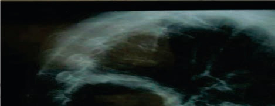<br>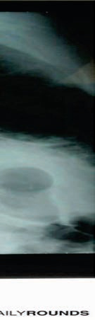<br><br>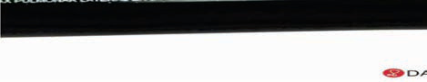<br>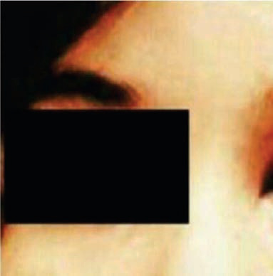<br><br><br><br><br><br><br><br>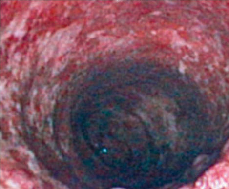<br><br>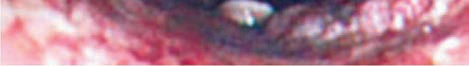<br><div class=''>a) „</div><div class='correct'>b)   „</div><div class=''>c)  </div><div class=''>d) …</div><p><i> ‹                       . Ž           ...</i></p></div><div class='q'><p><b>Q10:</b>             -              ?  ç‚/               ? 26       ‹                   ƒ    :                         / . Ž    è         /. Š ‚ ƒ               ?  ‚                    ?  ç                         ‡ˆ.           ?                                ? 114                 ?                   ?   Š--  ,  ‹      Ž  „ ,     ‰ †       .            ƒƒ „     ‹ . Ž       ‹        ?  ’             - ‚ “„       Å  ‚   .     Å              ?         ,      ,        .                  .            ?                        . Å                       ? 204         çè  êê    . 犑    . „                   ? 218            ‹‹  ‹‹       ?  ê-Å-           Å  .           ‚  Å   ‡      ? 245                   ?        „ƒ  , ‚      ‚                ?          Š‚      , ‚  . Ž èè    ,            .                     ?                      ?                  .     Œ    ?                 ?  †‡--                    .                  ?           ‚   ?                 ?   ‰‰--                 .                      ?  ‚                               ?                  ?        ç‡          . ‹            .      ?          Å     -ƒ  ƒ   ? 421            ç    -    ?                        ?     -             ‡               . ˆ       ,              . ‚              ? 464                 ,                         ê?           -   ˆ   ?               . ƒ                ‰.‰  /      ‰.Š  / .                    ?               ?                 Å .           ? 527                   ?                   ‚     ?  577       „      Š    -Å‚? Answer Key Question No. Correct Option Detailed Explanations  „         - Š    Š      .    -         ?   ‘--  ,         ‰       ,    , ,           .          . Œ                 ___________.       “Œ             __________. 603                  . “         . ‚                      ?                . ê       ,                . ‚              -? 622  ˆ               ?  ŠŠ-Å-              Å   . Ž Å         .         † Å   ? 647           …       .     …  …            …        .            ? 661                         ?   ’--      ƒ                   .      ? Answer Key Question No. Correct Option 690 Detailed Explanations   ‚…- -                 ƒ      .                ‘                  .             ? Answer Key Question No. Correct Option 697 Detailed Explanations        Å     çè-  ƒ?  ‚  -  ç        ‹Œ               Ž .            . ’-   ‰ ç  .                 ? 715                                      ? Answer Key Question No. Correct Option Detailed Explanations  „              .     ?  ‚           ç ?                       ?                  -    ?                       -  Ž-ƒ .         ‚       ,    -     ? 785  ç        :  Œ        ‰-   ‚           .              ? 822  „      ‰  „  „  Å    „   . …  Å  Å       Å      „  ?                  . …         . ‹  ,             .                   ?  ‡                Å ê   ?                      .        -ç‚Žè             ? </p><div class=''>a)   „</div><div class=''>b)   „</div><div class='correct'>c)    </div><div class=''>d)  </div><p><i> ’           -    -              . ‹  - ...</i></p></div><div class='q'><p><b>Q11:</b>                          -     ?          -                 .        ?             ‹?        ‚  ‚   -    (       )  . ˆ/     ƒ     ˆ. Š   /    ? 69            -            „.          ?               ?                       ?  … --         Å              . †               . Œ                    ?                       ?   “       „   .           „      ? 160      Å    ‚              Å …Ž? 173               ? 188   …‡- -                         .      ,                . Å                  ?  „               ?                           . ç               ? 236 Answer Key Question No. Correct Option Detailed Explanations  ê-Å-       Å       .              ?   ‰Ž--                     .              ?  ”•- -     „ƒ     .       ‚           ?                    ?              Å                ? 306   †è- -               ç        . …          „          “  .     ,          †‚‚  /          ‚  /.                ? 321   †- -       ƒ                         ê  .                 .    -           ? 331                    „  ƒ .            ?        ‚        ‚             .            ‚   ? 361  ê‘--             .         ,                      .                -     .              ?                      .            ? 390    -                   .                 ? 399 Answer Key Question No. Correct Option Detailed Explanations  406                         ? Answer Key Question No. Correct Option Detailed Explanations                       ? 414  ”                                   .         -ƒ  ƒ       ƒ •’…     ?         ç         ?                 ƒ  . ƒ    ƒ     ƒ ,           .               ‚        ? 449  ‚             ‡                       ‡     ?                            . ê       :                       ƒ -  - ?                              ?  ˆ     -            ?              -           -  Œ    ?                        ?   ‰ ‘-            ,   ,             .        -        ?  †               ç    ? Answer Key Question No. Correct Option 585 Detailed Explanations  …            ‡       ( ‚)   ? 591   Å‘- -                        .                 “Œ  . ‚      ? Answer Key Question No. Correct Option Detailed Explanations                                .     . 612                      . ‚                  ƒ   ( / )?              ?    Å      Å  … Å        . Œ      †,  ç‰     ‘.’%.            ‚      ?                           ?  …   -                ?  ‚      Å     ƒ çè-    ƒ         -    .          ? 704  ‚               .      ç .      ç  ?                    ? 733 Answer Key Question No. Correct Option Detailed Explanations  …                              ?                                   -    ?                   ?                 …          ?                             . †       ? 807   --                         .      ,      ,     ‰        .             ?  ƒ   ,   Å          Å          Å  „  ,     ‰   Å   „    . …     „           ?            .     ,         .                       ? 857  ‡             †       - ?                      .                .           .           -       ? </p><div class=''>a) ‘  </div><div class='correct'>b) ‘   </div><div class=''>c)    </div><div class=''>d)   </div><p><i>      -                .        ,     ...</i></p></div><div class='q'><p><b>Q12:</b>          ,         ‡     ? 8  †             . Š  -              è .               ?                         ? 53  ‰   ‚  çè     .… /.        … /.         .   . †                 . Answer Key Question No. Correct Option Detailed Explanations    -                                   .            79  „     ?  94 Ž      ,          . ç           - .             ?          -            ?  132        :  146 ƒ        ____?  è     ‹ ____   .  ’           - ‚ - ˆ    Å  ‚   .        ‚      . ‹  „   .                       ,  ,    . Š               ç‹Ž/‹çŽ   .      çè-            .                ?                  . Å                   ?  „                  ?                Å    Å      †        ? Answer Key Question No. Correct Option 246 Detailed Explanations     ,     ,          -   .           ? 261  271 –- -         ƒ  ‚     „ƒ  .       ‚  ‚  „          „  ?  289             ?                  †    ?          -            “  . …                      ,   , ,   „    .                    ?                Å   ?  343    -        -  ,           ?   ‰‡-‚-        . ‘          ‚          .                ?  374 ’      ,               .             ?                          ?  ‹                     .             ? Answer Key Question No. Correct Option Detailed Explanations  –          ƒ         ?  ƒ     ˆ             ê                 .             .        ç         ? 434     Å                ?  ‚                  ?  474 ê                          .         „   . ‚ ,         ,           „  . ’          „           .                    ?          -     ? 490  504            ?              ?                      .                  ?  …                  ?                 ? 563    ç                     . …              ?  ‡Å- -                          ŒÅŒ. ‚     -     ?       ‹‹                   ƒ. ‚                   ?  636                     ?  „ê-Å-    †  Å  Å   Å       ‚     . ‡ †,        .           ‚           ?  ‚   ‹    :  674  Š--  , …‰‰,      ‹          .              ?                ?  † ‰   ç   -   -             .          ç   ?  741 „               -     ‡ ?  752    ‚                .  “ ‘-Ž         „                       . ‰    .  761  Š‹- -              .              ?              ,   ,        .            .                ?  ç  „         __________.   è--       -             .              ‰- .                ?  839 …  Å  Å       Å ƒ   ?  ‹                  ?  873 ‡               †?  888                 ? </p><div class='correct'>a) êç-    </div><div class=''>b) êç-     </div><div class=''>c)     </div><div class=''>d) ‚   </div><p><i> Å       ‰   .              : •     -        ...</i></p></div><div class='q'><p><b>Q13:</b>  è                  ?  è ,           è                .               ?          -           „       .               .                 ?   Œ‘- -            êƒ        „              . ê   ,      .                 ?                   ?   ’„--          ‰       .                            ?                     ?                            -    ?                   è-     ‹ „?  β  ˆ  „        Å  ‚   .     Å         „?                    ?                            ?   “”--        ‚ ‰                  -   . ’                      …  . „             ?  ‘       †                 .            ?      ‚ „    ‚     ,     ,     . ‚Å       ,  „„        ƒ ,      ƒ      .  Å    Ž’        .       ‚     „       ?                „          ?   ê-  -   Å        ‘              .                    ?   Ž- -                     .            Œ    ?                          ’ ?  Š”--         Å            .                  ?   Š‡-‚-                .                    ?  “‘--               Ž                 . è   , † -      .                   ?  †    ‰Œ--       .               ? Answer Key Question No. Correct Option 391 Detailed Explanations               ,                        . ˜    .        ç                     ?        .ƒ.              ‰Ž          . ’                    ƒ  ?  ‚            …                     ?           -        Š         …†-‹    .               ?  „                      .               Å  ?  ç           :              ˆç  ? 518 Answer Key Question No. Correct Option Detailed Explanations                 ?  545        ƒ  ?   Œ  “                   .                 .                ?                    ?  ‚            '    ?                      . ‚               Š ?   …ê--     ‚   Ž-  - . „               Œ“”•. ˆ     .            . ç                 -                     Å.        Å ? 648  è                „   -        … .                        ?                     ?   Œ-- Å    Ž Å    Å   ˆŠ  ƒ  Å ’      (Œ’’  )       - .  Å  ƒ       .        Å  Å    ?  ‚            . †      -   Å   Å  ç        .           ç?  „           ‡                 ’        ?                     ’   . ˆ   -   ,          ” ’ ”^/ ê.                       ?  ƒ     Œ‹- -  ,         ,        . †       -   .                 ?           çè     . Å     ‘/      “’/ . Œ  ˆ    ‰  ””%   .               ?  †              -  ?   ê--                           Š  . Å        .    ,                  .             ? 823  …         Å  ‚   “- „„         „     „ ?  Žè--             .            è-          ?   ‘è-† -        ,                ‰- †  . ‡           ‹          ?  ’                            , …  ___________. </p><br><br><div class=''>a)  </div><div class=''>b) ‘ </div><div class=''>c)  </div><div class='correct'>d)    </div><p><i> è         .                         ...</i></p></div><div class='q'><p><b>Q14:</b>  Å          -    :                -         ? 27           ƒ             ? 54                       ?  ç                  .            ?  115                 ‰        .             ?  Ž               ?    „               ,              .                 ?          ‹    ?  ’           Å    ‚   .     Å   Å „       ?                   ?   …‡- -              . Å                 ? 205  Š                        . „                      ? 219   ’Ž--                    .                ? Answer Key Question No. Correct Option 262 Detailed Explanations  ç-   ,                             ‚ „    ˜Ž. ê           „          ‚  - Å    .    -             ?   -  -             ƒ     “”  . ê       ƒ-        “”  .    ƒ        ,             ?   ˆ-  -               Å .                      .        †  ?   ,                   ,               ? 322 Answer Key Question No. Correct Option 323 Detailed Explanations   ç†- -                .            Å       ?                        ?        ‚  . Å          ,          .                       ' ‚ ?                     .  “  ,                            Š.                 ?                     ƒ †   .          .                     ? 422  ƒ                    .        ’ƒ.              ?      ‚                          ƒ    . ‰ Š,                 .            ‚      ?  ç       ‡               ? 465  ç‹-  -      ê               . ‡   ,            .                 „        ?  „ - -                  ,  ,   ƒ    -ƒ    .                  ?                       . ç   , ,      . è             ?      Å                . Œ                   .                     ? 528                .           ?                ?  …          -    (ƒ)        Å ‚   ?  ‡Š- -                    . Ž   ,     ,           .          ç     ,   ,      . ‚           ,             ‡  Å? 613 Answer Key Question No. Correct Option Detailed Explanations  •                  . ç          ƒ                    ? 623   -      ‚                 ‰                 .                 ‰     ?     -        † Å    Š,           ‚  Å     ?               ? 662           „…                        .               ?        Å    ÅÅ    Å  Å ?  ‚  ,    …              ,    ‹Œ    .      ‰    / . †            716 ”     .      ç  ?   ”-  -            ‰      ‡    . –     ‡    ê-                           . „                    ‡    ?   - -        ‡Åˆ        . Œ                     .                ? Answer Key Question No. Correct Option 753 Detailed Explanations   ŠŒ- -                .            .          Žè,èèè/  .                  ?  786 ‰       -         ,    .            ?  †         ?  Å                    ?  „   ‚„  Å     Å    Å    Å  „ .  „    „  Å       ‚          ‚   . …              ‚  ÅÅ? 840               ?  ‡    ?                ? </p>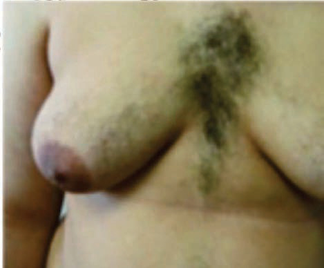<br><br>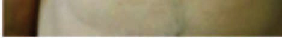<br><div class=''>a)  …</div><div class='correct'>b)  „ </div><div class=''>c) …</div><div class=''>d)   </div><p><i> ’           -  . Š-      ê           ...</i></p></div><div class='q'><p><b>Q15:</b>  Å     -                                          ?                   ?           ‹             ?                               ? 80                 -     ? 95               ç ?             ?  ‚              ‰Å. ‰ „  ,           ƒ‰ …†  ‘.                       ? 147        ‹               „  .  è‘‘ˆ   ‹       .       161        ?   -„-      Å  ‚  .  è…ê  Å   Å •‹       „  Å  Š      †‡%.    174  Å           ?                       ? 189   …“- -          ‚‹‘    †„ / ,       . Å              ?  „                           ?   ‚ „  ƒ     „    ‚  .       ‚             ? 272   ‡-  -          Žˆ       . ê           •  .                      ? 290               Å ? 307    -        ‚Œ-      ? 332               .      ,             , ,    -  .                ? 344  ‘               ‚    .            ‚       ? 362  ˆê--               .    ,      ”†/  “Å/ .           Ž         ? 375  ‰        ƒ               ?         ç             -     ?  450                     ?  ‚                ? Answer Key Question No. Correct Option Detailed Explanations                         .             „     ? 475  „                   ,  ,   Å. ‰         .                       ?  „            .   ç‡          -        .      ? 529                   .              ? 546  ”      -    -              .             ?   ê--       ç      ,   ,   . Å   ‰         . …            ? 592   ”–- -   ƒ        ƒ    .        ƒ          . ‚                  ?   --      ‚               ,       .                 ? 637               ?         Å‹ƒ-     ?  ‡            ,                     ? 675           Å   Å     ? 705        ?   -  -         ç  ‡ …‹  .  ˜  ,   … ™                  .    ‡     , „                  ? 742                              ç   .  ,            .                   ? 762        Ž -      ‹  .      :  †                 ? 808                         ‡  . ƒ     .  †   Å  Å  „    „ ‰    Å  ?  Ž                     ,        ,      . ‰ †  Š…   …     .               ? 858   ‚-† -          †               .            . Š          †      †  .            †       †      †        . ‡             †          ? 874                      -     ? </p><br><br>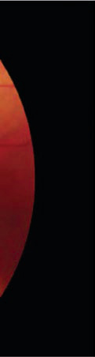<br><br><br><br><div class=''>a)   </div><div class=''>b)    </div><div class=''>c) Å  </div><div class='correct'>d)  … </div><p><i> Å     -                                 ...</i></p></div><div class='q'><p><b>Q16:</b>                             ? 9                è .              ? 28                      ‹        ?                  ,  ,      ,      .      ‘‘/             ‘Ž’/“.                ?   ƒƒ-          ŠÅ     -. Š   ,  „  ‚‹è/‚èè †            . ç       . Š           ?   “‘--       -                      . Å       ‡                    .      ?     -   -                . 133  ‚                           -.              ?                ‹              ?      Å      ?                          ‹êŽ/‹‹Ž  .                      ?                            .         •   ,           . Å               ?  „                        ?  Š•- -    „    ˜Ž ‚             „     . ê ……  ‚      ‹ ’ƒ  Å   ‚  .       ‚     „     ?                   . Å          :   Žê-  -          „…           .                   ƒ  . „                 .       †  ?   - -         ƒ              .                ?      -     .             ƒ  ?               ?               ?                       .                 ? 423  435 ƒ       ê            ,   ,    . Œ         ‹    ˆ        . ‰         . Œ  ,               _______.  ’                    ?  ‡              ,                      ?  491 „              ,    ,    . ‰.      .                     ?  505           ê   .            ?   --                   .             ‹  .           :               ƒ   ?                  çŽ     ‚ . ’             -           .           ‚          ? 564                           . …                    ?  Ž                   ?   ê--      è ‚         .                 ? Answer Key Question No. Correct Option Detailed Explanations 638           ‡“Œ   Å  ‚       Å Å.     Å     Å. ç Å   † Å    Å        ?               ?   ‰ç-       „…        . “                         . “           -     .            ?              Å   ç   Å Å ”…‡  . ‰                   Å .             ?  ‚                   .     ‰      /êè.             ç        ‰      ?  „                 ? Answer Key Question No. Correct Option 743 Detailed Explanations                          (  „)                .    „.     ˆ                ?                          . †          ?        ______.  „         „       „ . …  Å      ç      ?  ƒê--        ’  . “           ,      .                  ?  ‡         †                 † Ž† ?  889         “                       .      . </p><br><br><br><br><br><br><br><br><br>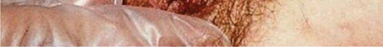<br><br><br><br><br><div class=''>a) …</div><div class='correct'>b)   </div><div class=''>c) </div><div class=''>d) Ž   </div><p><i>                          .        ...</i></p></div><div class='q'><p><b>Q17:</b>                        ?            ‰       -   ?  ' -  '                               ?                           ?          „           ‘’’.              ‘’’?            “   ? 116  Œ       -               .                       ?    „          -          . ƒ                . 148   Š--               .         Ž        .              ?    “„     ƒ?                       .            .                ?   –„- -                          ’     . Œ          . Å            ?  „                ?        ‚      ƒ    ?           Š            ?              Š        ? 308     „ˆê                 ? 333                  ?                      . ê                     ‚  ‚.         ‚ ?    -   ,        ?                      ,              -   . Å    ŠŒ…    .                ? Answer Key Question No. Correct Option Detailed Explanations  ƒ Å -  -      -     ç  -       . Œ  ,              Å / .        ç               ‚  ?                   ?                 -. …             .                   ?           :               ‘     ?             ?                                   ?  ”            -            . ‰        ‚                „ Š/ .           ‚   •     ?  …                     ‡? 593 Answer Key Question No. Correct Option Detailed Explanations         ’         ‰. ‚       —‰       ƒ              ?      †Å,             .    Å  , Å' †   .   Å   — †                .   Å ‚       ? 649   Ž--            .  ’“†   Š /   …     .              ?                      ?   ‘’-- Å       Å       Å            — Å . ‡   ƒ        Å        ƒÅ    .       Å         ? 706 Answer Key Question No. Correct Option Detailed Explanations           ç      ?                       -       ?        ˆ   ,     ,  ,     .                   .                     ? 787  †           ?   Šè--                    -          .                    ? 824  …  Å  Å         „  ?  ‡                  ?   ˆ                 ? 875              -      (Ń) ‰/”    ? </p><br><div class=''>a) …  </div><div class='correct'>b)   </div><div class=''>c)   </div><div class=''>d)  </div><p><i> ‘’‡Å‡/‰               . ‹                ...</i></p></div><div class='q'><p><b>Q18:</b>                    ?               ( )         , , ‰,  .             ? 29 d)           ‘,                     . ‚              ‡                   .       ‹    ‹       ? 55      „            ,          „ .                . …            .             ?                  ? 96                     ,               ?              -   ?  ‚      -                    .                     ? 149                       - ‹  ? 162  ‹           ‚       Å Å    Å ‚  ?              ?  206 Å                              ?  ‘     犑                       . „                  ? 220        ‚               ?   –-  -     ,  ’-         Š         ,     .         ‚        291            .            ?  …  “     ”          . “              ÅÅ    . ”     ,        †         .        † †   :   ç†- -                ,    ,  . „                   .           '    ? Answer Key Question No. Correct Option Detailed Explanations 334                     ?                      ?                ?  ƒ “Å-  -           ƒ      . Œ                        .                ?                 Å    ?  Œ“-  - „                   ,                   .                  ?  è              ?               -  -   ?        ,          .               .                ? 530  Žƒ             ƒ           ?   –                ?  624 ‚                ƒ          ’      ‰?  Š…-Å-        Œ           . •Å    Å        Å .            Å ‚     ?   Ž--           Š- .            .               ‘.%. † … 663   ,            ?   Œ--  ,        ,             .     .  717 ‚      ç   ç-     Å    .           ? Answer Key Question No. Correct Option Detailed Explanations                   ?        ˆ        “-      .                   ?                      .          . †                ? 809   è--                        ê ‰   .                           ?  •-  - „   „      , Å  ,      Å . è ‰   , „   „  . † ‚    ‚ „  „ ,     „ „      . † „  „   ‚ ˆƒ, ˆƒ•,   ˆƒ‘ „  ‚. …     Å   Å       ? 841                 ,          ”    •         ?  ‡         Š -„          ?           甕•‚  è? </p><br><br><div class=''>a) ç  </div><div class=''>b) Å   </div><div class='correct'>c)     </div><div class=''>d)   </div><p><i>             .      ‘’•„…        ‡    ...</i></p></div><div class='q'><p><b>Q19:</b>  Å                . ‹                                . Å            ,                . ‹    :                 -   ? 30  Š                            ______.           Å          -     .         ,   ,      .                 ? 81                      ?                             ?  …                          .       -                  ?  ‚                         . ‘                     .              ?                ?  175   Å  ‚    ‚  „  .    ‚        Å „     ?  190             ?          :  ‹                ?        ‚             ? 273             „        -      ƒ -   ?              Å  ?       ‘      -      . Å                .            ? 345               ê•            ? 363  †--   ç             .           ? 376  ƒ “-  -                           . ƒ    ,     ˆ             ˆ  ,       .                  ”’   ? 436            Å            ? 451  476               -. ’          .               ?   ƒ       :                      ?     -                     ? 531  ‚      ' ,                 ? 547  —                         ?  ‚             ƒ          ?         ‚    — ‚    Å …   ?   --               …   . –    ,  …              .                 ?   •ç--      ‹ ,                .          ‹            ? 676             „   ? 763           çè         .  ‚          ‚      ?   ”Š- -                .           . †              ?                         ,             -      ?  …  Å  Å      „   †    ?              . “                 .               ? 859  ‡             †     ‰   ?                   ? </p><br><br><br><br><br><br><br><div class=''>a) ç  </div><div class='correct'>b) ç </div><div class=''>c) †</div><div class=''>d)  </div><p><i> ‹                             .       ...</i></p></div><div class='q'><p><b>Q20:</b>  10          ?                      ?            ’  ?          êƒ     -          .               -        ? Answer Key Question No. Correct Option 82 Detailed Explanations   ‹Œ--              - -ƒ   .     .       ,   -                  .                ?  -                ? 134                            . ‰ „  ,                 .                 ?            ƒ   ?           ?                 .               ?   ‡“- -             . Å           ?           -  . ’ 犑    . „                    ? 221        ‚                         ?              „-    ,                      ?   ê-  -            '      .                                ?  †‡--                 . Œ                 . Œ                  ƒ .               ?  ‘      ‚                    .           ‚?  ‘--   ,           ,             .                     . –‚‡ Ž      ,  —  = ”” .           Ž   ?   ”„è              ç            –  = ‘——  .             ˆ       ?       ƒ        ƒ   -   ‹    .              ƒƒ            ?                      ?  492          ■ β-   ?  506                              -  -    .     . Answer Key Question No. Correct Option Detailed Explanations 507   ‰ê--        .        Ž . ‘            .           ?                           . è            ?  565  ‹†--                                ,       .           ‚      ?              ƒ            . ‚        ƒ    ?  Šè-Å-            . ç        •Œ•   .     ˜   Å   ? Answer Key 650 Question No. Correct Option Detailed Explanations  †              . Answer Key Question No. Correct Option 664 Detailed Explanations                    ?             ˆ              .       „             .                 -        .                 ‚    ?  †          ? 810   ƒ       ‚   .             ‚            ?  …  Å  Å       „       ? 842     ‹  ’                            . ‹              -   .        ?  ‡             ?  890 ‚             Š–  .         -ˆ            ? </p><br>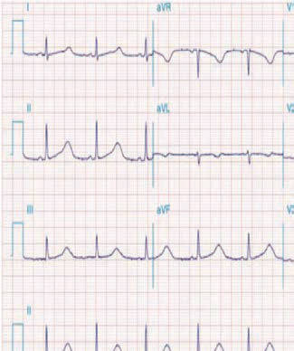<br>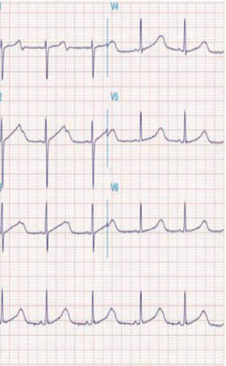<br><br><br><br><br><div class=''>a) †</div><div class=''>b)  </div><div class='correct'>c) ç  …</div><div class=''>d) ç </div><p><i>      .                    .          ...</i></p></div><div class='q'><p><b>Q21:</b>             ’-  ?           Ž-   -   ?   -            ”       ‹  • ƒ   ‡ .           ‡ ?         ƒ                 ?         ,                           ? 117             Å     ?                          Ž%      ?          -‹  ?               „  „     “   Å   .       Å    ˆ„    ?                      . ‡       ,                       .             ?  Å                       ?  „                               ?  ‹- -            ‚     êè. è      „          ™ .       ‚    ‚     „    ?            -      ‚    ƒ? 292   ê-  -                   . „ ‘   ,                  †             '  ‡ˆ             .                     †   .     309        ■           ?        ƒ      ?  ê             ? Answer Key Question No. Correct Option 364 Detailed Explanations                ? 377              ? 437                          ‚           .     .           …†     . ‡    ,     ƒ   ‰Œ”/“” …       ƒ   ‰‰”/•” ….                 ? 477  „ Å                   .              .              ?                   ?                    ?   --             çŽ                       „  . Å    — Œ   .   -      ‚        ? Answer Key Question No. Correct Option 566 Detailed Explanations  ‚           ƒ                 ? 625 Answer Key Question No. Correct Option Detailed Explanations             ?                        ’ .     ‘                .                 .        ‘•-    ‚      .     Ž‰Œ‡  ,        -           .           ? 788       “ '   ,                    -‹Œ     . †             ?                  ? 825  „              Å      ˆ†        „ ‰   -    . …     Å   Å    ?  ƒ‘                                   .     ,                                 .          ?           ”          . ‡ –      †       ? 876  ‘ -              .                    ? </p><br><br><div class=''>a) ꂈ   </div><div class='correct'>b)      </div><div class=''>c) ç        </div><div class=''>d) ç           </div><p><i> ’-                ‡  ŠŒ‡ ( ŠŒ‰).          ...</i></p></div><div class='q'><p><b>Q22:</b>          ,           ?              ? 31  • ƒ   ‡    ? 56  97               βƒ   .             ?             ˆ   “  ?   -                          ?  150                     ? Answer Key Question No. Correct Option Detailed Explanations 151           „  •+-ˆ  ? 163 Answer Key Question No. Correct Option Detailed Explanations  –    Å    ‚      .         : 176         „        . ’   ,           ççŽ/‹“Ž           .                ? 191  207 Å                ?           ê              . ’ 犑       .                 . ‚    ,               . „                     ? 222  Š™- -    ‚ „    … ‚ „  — Å       . ……  ,   , „  Œ-™’ƒ  Å   ‚    ‚          .             ?               ‚      ƒ?                          ? Answer Key Question No. Correct Option 310 Detailed Explanations                           - ?            . …                       .                ?                                  ?    ƒ    , Å,             .            ?  ê ‚è–                . ’     —ê = Œ•• . ê      :                             ? Answer Key Question No. Correct Option 493 Detailed Explanations  532 …            :                ?  “                   ‹      .                         ?                              ? 764                  :  †      † '   ? Answer Key Question No. Correct Option 811 Detailed Explanations                            ”  ?  –     „„          Å  Å   ?  Žƒ                         ƒ   .             Ň.                 ? 860         ç     †  ”            †  . —              †    -‚’   . Š†   .                  ? </p><br><div class=''>a) ç  </div><div class=''>b)   </div><div class=''>c)    </div><div class='correct'>d) è … </div><p><i> ‹                . ˜ :                ...</i></p></div><div class='q'><p><b>Q23:</b>  ‘                     .                ?                   ?   ‹     ' '   .               ‹  ? Answer Key Question No. Correct Option 57 Detailed Explanations   ‘--                .                 ?                    ?  ê     -             . Answer Key 135 Question No. Correct Option Detailed Explanations      Å        ? Answer Key Question No. Correct Option 177 Detailed Explanations                       .                   ?   †‡- -                 .                            . Å              ? Answer Key Question No. Correct Option 208 Detailed Explanations               ê   .                    ?  274 çç- -        ˜Ž ‚         „     ‚        Å. ˜   ,         ‚         ‚        - -      -     .               ?          Žˆ  ‚    ‘  . ê              „  „   . ê        -˜   .                ?  †ê--                 ” .                  346  †   .                 ?              . …                            Ž   . ˜      .  ƒ                     . Œ            -   . Œ                                     .                  ˆ       ?  452        ƒ . ƒ    ƒ     . • ƒ,       ƒ          .        ‚  ?  Œç-  - …†-        … ê. ‡  -   ,  è Œ           ‹””/³.  Ž ,                 .          ? 478        , ,   . ‡          .          .            ?                             ? 548  “”'                   ? 677                       ?            (Ž‰Œ‡)   …  -         .  Œ‡ç-’         -        ?  Å Å      ‚     -     :  “-  -        ‹       „ . ƒ     Å     ,  ‚„ ‰      „. …  Å  Å      ‚    ?                  . ‹                              .      ?          _______. Answer Key Question No. Correct Option 877 Detailed Explanations   ”•--        . ‘            .              ‡‚ƒ    ? 891 </p>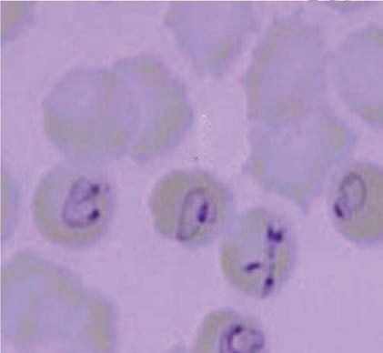<br><br><br><div class=''>a) Å   </div><div class=''>b) ç  </div><div class='correct'>c)  </div><div class=''>d) </div><p><i>                       ,        ”…-ç…     ...</i></p></div><div class='q'><p><b>Q24:</b>  11 Å „„- -                     . è                         . ‘                         ?                 ’  ?                 ?                   ?           .             .           ?                   ,       . ’            . ‚         . 犑   èŒ         . „                   ? Answer Key Question No. Correct Option 223 Detailed Explanations            -     ‚:                      ?         '  ƒ .                  .              ?                    . …            . „          ?         ç          ? Answer Key Question No. Correct Option 438 Detailed Explanations               Š         ? Answer Key Question No. Correct Option 453 Detailed Explanations          Åê,  ,    , „   ,     ,       ,    ,   ,      ,     .               ?              . ‡     ‡      .                   ? 533 Answer Key Question No. Correct Option Detailed Explanations 534                ?  “                                  .                ?                  ?             ?  †        -     _________.  …  Å  Å     Å    ‚   ? 843                    ?   ‰--                      .            -           ? </p><br>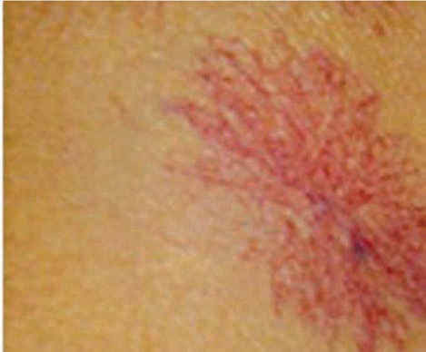<br>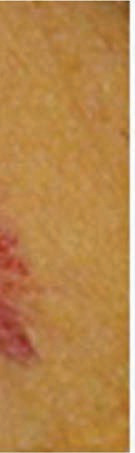<br><br><br><div class=''>a) „</div><div class='correct'>b)    </div><div class=''>c)  </div><div class=''>d) Å …</div><p><i> “                 (’’)                ...</i></p></div><div class='q'><p><b>Q25:</b>  è    ‘’”Å•  _______               -          : 32   Œ•--     '                        .           ? 98                    ? 118  ”         -                ?                              ?                ? 293               ?                        .                   Ž          ? 378                         …†?   Š•--                .                ,          .               ? 549   ‰ê--        „…        .               ? 678 Answer Key Question No. Correct Option 679 Detailed Explanations      ç       .               ‘ ?  ‚     Žèç         . ‰    ,  -    . ‰      ,             ” 789  Å .              ?  ˆÅ                  -Å   ? 826  †   Å  Å        -  -        Å   ?               ,             . ‚            . …                ?   ”–--          . † …  ,        .    …         .       -             -       ? </p><br><div class=''>a)  </div><div class=''>b) Å </div><div class=''>c)   </div><div class='correct'>d)   </div><p><i> ‹  -   ‘’”Å•  Å.  ‘’      ,   ‘’               ,...</i></p></div><div class='q'><p><b>Q26:</b>            ç          ‰……  , ˆ„      †…         -    ? Answer Key Question No. Correct Option 12 Detailed Explanations        ’      ______.              ?                      ? Answer Key Question No. Correct Option 119 Detailed Explanations                         ? 192 Answer Key Question No. Correct Option Detailed Explanations 193        ‚     „ƒ                ? 275      -                  ? Answer Key Question No. Correct Option 294 Detailed Explanations             ,             .                     ? 347 Answer Key Question No. Correct Option Detailed Explanations            ? Answer Key Question No. Correct Option 379 Detailed Explanations                             …†? Answer Key Question No. Correct Option 479 Detailed Explanations                       . Å -            . –             .                   ?          “     ? 765              ?         ’“”           - ?  …  Å  Å    „     ‰  Å   „   ?         ,         ,   ,        . “         .              ? 861  892  ”Œ--         †Å   Šˆ   … . ê -Šˆ‹            …      ˆ‹•. ‚      .               ? </p><br><br>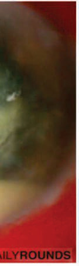<br>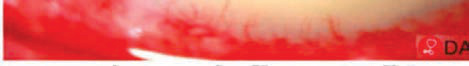<br><div class=''>a)   </div><div class='correct'>b)  </div><div class=''>c) ç  </div><div class=''>d)   </div><p><i>        ,                 . ˆ„   ‰……       †… ...</i></p></div><div class='q'><p><b>Q27:</b>               ? 33               .                 ?    ‚           ‚      „                .         ?  ˆ ƒ              ? Answer Key 550 Question No. Correct Option Detailed Explanations        -               .                             ?                                      ?                         .          .       ?  “-  -         . è ‰   ,  „„  „   „    „    . – „ ‚ „   Å   . …  Å  Å                Š—    ? 844             ‰–    . ‹                      -      .          ?               …        ? </p><br><div class=''>a)  </div><div class=''>b)   </div><div class=''>c)    „</div><div class='correct'>d) ‘   </div><p><i>                  .        ...</i></p></div><div class='q'><p><b>Q28:</b>   …–- -         — †    .                 ? Answer Key Question No. Correct Option 34 Detailed Explanations                 : Answer Key Question No. Correct Option 99 Detailed Explanations  Š•- -    „    ˜Ž ‚             „     . ê ……  ‚ &;‹ ’ƒ  Å   ‚  . ê  -            :          ,   ‘    ‘   ?                               ?  Œ               .                 ‰ ? Answer Key 827 Question No. Correct Option Detailed Explanations  ••-  -       Å     Å   „     . Œ  „      ‚ . …  Å  Å              ? Answer Key Question No. Correct Option 845 Detailed Explanations                  ?               ? </p><div class=''>a)   </div><div class=''>b)    </div><div class='correct'>c)    </div><div class=''>d) Ž  </div><p><i>         — †               è   ,  ...</i></p></div><div class='q'><p><b>Q29:</b>  276 Š–- -    ‚ „    ˜Ž ‚        ‚        . è   Å ‚            ‚    .       ‚    ‚      ? Answer Key Question No. Correct Option 277 Detailed Explanations                               ?  790 ‡                 ?              ? Answer Key Question No. Correct Option 862 Detailed Explanations   ”•--        . ‘            .                  -ˆ         ? 893 </p><div class=''>a) Å    …</div><div class='correct'>b)  </div><div class=''>c)  </div><div class=''>d)   </div><p><i> ê            ‚        ‚       ...</i></p></div><div class='q'><p><b>Q30:</b>          ,                       ? 766                 ?  Å    …,           /       -   ,     …   : Answer Key Question No. Correct Option 894 Detailed Explanations </p><div class=''>a) è   -ˆ    …</div><div class='correct'>b) è   -ˆ    …</div><div class=''>c) ‡        ÅŒŒ</div><div class=''>d) ‡        ÅŒ•</div><p><i>                 .            ...</i></p></div></div></body></html>